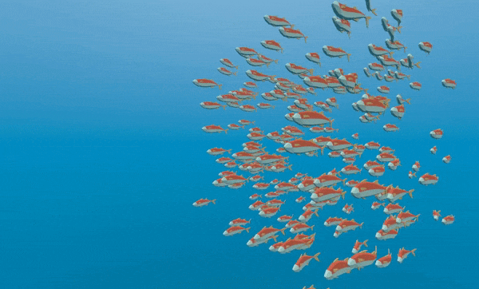

Work in progress
The content of this page was not yet updated for Godot
4.7
and may be outdated. If you know how to improve this page or you can confirm
that it's up to date, feel free to open a pull request.
Controlling thousands of fish with Particles
The problem with MeshInstance3D is that it is expensive to update their transform array. It is great for placing many static objects around the scene. But it is still difficult to move the objects around the scene.
To make each instance move in an interesting way, we will use a GPUParticles3D node. Particles take advantage of GPU acceleration by computing and setting the per-instance information in a Shader.
First create a Particles node. Then, under "Draw Passes" set the Particle's "Draw Pass 1" to your Mesh. Then under "Process Material" create a new ShaderMaterial.
Set the shader_type to particles.
shader_type particles
Then add the following two functions:
float rand_from_seed(in uint seed) {
int k;
int s = int(seed);
if (s == 0)
s = 305420679;
k = s / 127773;
s = 16807 * (s - k * 127773) - 2836 * k;
if (s < 0)
s += 2147483647;
seed = uint(s);
return float(seed % uint(65536)) / 65535.0;
}
uint hash(uint x) {
x = ((x >> uint(16)) ^ x) * uint(73244475);
x = ((x >> uint(16)) ^ x) * uint(73244475);
x = (x >> uint(16)) ^ x;
return x;
}
These functions come from the default ParticleProcessMaterial.
They are used to generate a random number from each particle's RANDOM_SEED.
A unique thing about particle shaders is that some built-in variables are saved across frames.
TRANSFORM, COLOR, and CUSTOM can all be accessed in the shader of the mesh, and
also in the particle shader the next time it is run.
Next, setup your start() function. Particles shaders contain a start() function and a
process() function.
The code in the start() function only runs when the particle system starts.
The code in the process() function will always run.
We need to generate 4 random numbers: 3 to create a random position and one for the random offset of the swim cycle.
First, generate 4 seeds inside the start() function using the hash() function provided above:
uint alt_seed1 = hash(NUMBER + uint(1) + RANDOM_SEED);
uint alt_seed2 = hash(NUMBER + uint(27) + RANDOM_SEED);
uint alt_seed3 = hash(NUMBER + uint(43) + RANDOM_SEED);
uint alt_seed4 = hash(NUMBER + uint(111) + RANDOM_SEED);
Then, use those seeds to generate random numbers using rand_from_seed:
CUSTOM.x = rand_from_seed(alt_seed1);
vec3 position = vec3(rand_from_seed(alt_seed2) * 2.0 - 1.0,
rand_from_seed(alt_seed3) * 2.0 - 1.0,
rand_from_seed(alt_seed4) * 2.0 - 1.0);
Finally, assign position to TRANSFORM[3].xyz, which is the part of the transform that holds
the position information.
TRANSFORM[3].xyz = position * 20.0;
Remember, all this code so far goes inside the start() function.
The vertex shader for your mesh can stay the exact same as it was in the previous tutorial.
Now you can move each fish individually each frame, either by adding to the TRANSFORM directly
or by writing to VELOCITY.
Let's transform the fish by setting their VELOCITY in the start() function.
VELOCITY.z = 10.0;
This is the most basic way to set VELOCITY every particle (or fish) will have the same velocity.
Just by setting VELOCITY you can make the fish swim however you want. For example, try the code
below.
VELOCITY.z = cos(TIME + CUSTOM.x * 6.28) * 4.0 + 6.0;
This will give each fish a unique speed between 2 and 10.
You can also let each fish change its velocity over time if you set the velocity in the process()
function.
If you used CUSTOM.y in the last tutorial, you can also set the speed of the swim animation based
on the VELOCITY. Just use CUSTOM.y.
CUSTOM.y = VELOCITY.z * 0.1;
This code gives you the following behavior:

Using a ParticleProcessMaterial you can make the fish behavior as simple or complex as you like. In this
tutorial we only set Velocity, but in your own Shaders you can also set COLOR, rotation, scale
(through TRANSFORM). Please refer to the Particles Shader Reference
for more information on particle shaders.